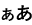

FAQ（よくある質問）
無料で参加できます。ただし、スマートフォンのパケット通信料は自己負担でお願いします。
事前登録の必要はありません。したがって、IDやパスワードも必要ありません。
事前登録の必要がなく、アプリ内で個人情報は扱いません。
このサイトに対して、位置情報サービス（GPS）が無効になっている可能性があります。つぎのような対応をお試しください。
１）AndroidデバイスでChromeをブラウザとして使っている場合
１．このサイトに移動します。
２．アドレスバーの左側で、サイト情報を表示させるをタップします。次に [権限] をタップします。
３．位置情報をオンにします。
２）iPhoneデバイスでSafariをブラウザとして使っている場合
１．このサイトに移動します。
２．アドレスバーの左側で、サイト情報を表示させる （バージョンによって、など異なります。） をタップします。
３．三点メニュー[・・・]をタップします。（バージョンにょっては、[Webサイトの設定]をタップします。）
４．[位置情報]をタップします。
５．[許可]をタップします。
３）iPhoneデバイスでChromeをブラウザとして使っている場合
１．一旦、このサイトを終了します。
２．iPhoneのセッティングアイコンをタップします。
３．設定から[アプリ]をタップします。
４．アプリからChromeをタップします。
５．[位置情報]をタップします。
６．[このアプリの使用中]をタップします。
７．Chromeの設定を終了し、改めてこのサイトに移動します。
※Androidデバイス、iPhoneデバイスともにバージョンによって設定方法が異なることもあります。
１）距離が離れすぎている。
スマートフォン等の機種によっては、位置情報サービス（GPS）の座標が大きくずれていることがあります。また、お手持ちのスマートフォンの位置情報のぶれ（変動）によって、チェックインに時間を要する場合があります。
スポットまでの距離が表示されるので、これも参考にしてください。
２）GPSが有効になっていない。
お使いのスマートフォンで、位置情報サービスがオフになっている可能性があります。スマートフォンの位置情報サービスが有効になっているか確認してください。位置情報サービスを有効にする方法は、Q4を参照してください。
同じチェックインポイントでチェックインできるのは1回だけです。
災害伝承碑などの近くに駐車場がないところもあります。ルールやマナーをお守りいただき、安全に訪問してください。
有効です。スタンプ帳には、別の日にゲットしたスタンプも反映されます。
ただし、Safariをブラウザとして利用している場合、ブラウザの仕様で、サイトにアクセス後７日間ユーザーの操作がない場合、保存したデータが削除されてしまう可能性があります。その場合、獲得したスタンプが消えてしまい、復活できません。ご留意ください。スタンプ帳を適宜スクリーンショットして保存しておくことをお勧めします。
無効です。スマートフォンを変更すると、それまでにゲットしたスタンプは反映されません。同じスマートフォンをお使いください。
無効です。同じスマートフォンを利用していても、ブラウザを変更すると、それまでにゲットしたスタンプは反映されません。同じブラウザでお使いください。（例：途中からMicrosoft EdgeからGoogle Chromeへの変更はNG）
このアプリケーションは、ブラウザのストレージ機能を使っています。したがって、このWebサイトに関するデータが削除されると、ストレージがリセットされてしまうためです。
お試しいただくしかありません。
記念品の進呈は、参加者おひとり（スマートフォン１台）あたり、1回に限らせていただきます。ただし、数に限りがあります。また引き換えの期限にも留意してください。
和歌山県土砂災害啓発センター（以下の住所などを参照してください）でもらえます。ただし、開館時間と休館日にご留意ください。
住所：和歌山県東牟婁郡那智勝浦町市野々3027番6
電話番号：0735-29-7531
メール：e0806041@pref.wakayama.lg.jp
開館時間：9時から12時、13時から17時
休館日：原則として年末年始
※大雨警報等が発表された場合休館となります。
入館料：無料
記念品引き換えの期限：令和８年５月３１日
※とくに遠方からお越しの場合は、事前に連絡して頂くことをお勧めします。
なお、記念品は数に限りがあり、参加者おひとり（スマートフォン１台）あたり、1個に限らせていただきます。また、記念品をお渡しする際、簡単なアンケートにご協力をお願いします。